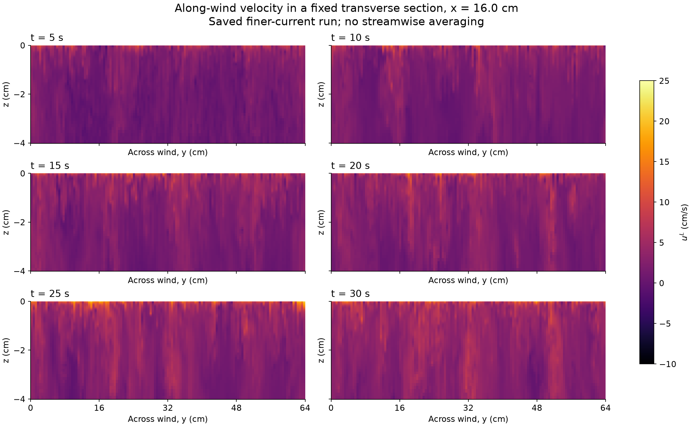

Horizontal currents: streaks and jets
The finer-current, ak = 0.2 case, rendered from saved production output. Both movies play at 0.2× speed.
Developing structure · 5–30 s
The left view follows the top-and-side velocity visualization in Wagner et al. (2023), figure 7. Color shows the along-wind component of the wave-averaged Lagrangian-mean velocity, uL, including its mean. The right view removes the horizontal mean at a fixed depth near 2 mm to expose faster and slower streaks; red and blue indicate departures from the mean, not necessarily opposite flow directions.
Fixed linear colors cover every displayed value; no clipping or frame-by-frame normalization. Every saved spatial sample is retained. The 3D box shows the upper 4 cm with depth enlarged 4×. The top face uses the uppermost cell and is drawn flat: this is a current-field view, not the moving wave surface. Saved states are held between 0.1 s snapshots. The elapsed-time origin corresponds to a pre-aged, 16 s wind-drift profile, not the laboratory wind-onset clock.
Transverse sections · six saved times

A fixed slice through the domain center, without streamwise averaging. The same color scale is used for all six snapshots and the 5–30 s box view.
Full evolution, including startup · 0–30 s
This version uses a wider fixed linear scale to include the stronger initial disturbances without saturation. It is less contrasty at later times; the 5–30 s version above isolates the later development with its own fixed scale.
These views show current organization, not a standalone causal test of Langmuir turbulence. The earlier current movies used quasi-Eulerian velocity uE; these use the saved Lagrangian-mean velocity uL. The simulation has parent-wave/current feedback; Cho does not feed back into these currents. This is a visualization of the existing run, not a rerun or a reproduction of the paper's experiment. Rendering details · Verification.